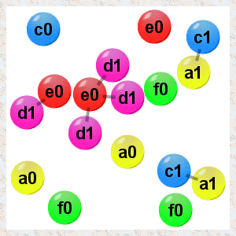

Organic Builder
"Make up our own rules of construction to simulate open-ended, creative evolution. Forget all that chemistry they made you learn in school, we're going to make it all up as we go along. "
Presentation
What is this?
This freeware demonstrates an artificial chemistry. Each circle is an atom, that floats around and can become bonded to others to form a molecule.
In real chemistry, the bonding rules are written like this 6*(CO2) + 6*(H2O) + light => C6H12O6 + 6*(O2), where carbon dioxide and water (six of each) react (in the presence of light) to form glucose and oxygen. This is the reaction that plants use to photosynthesise.
In an artificial chemistry we use simpler rules, like this one a0 + b0 => a1b2, rather than use the atomic types seen in nature (hydrogen, oxygen, etc.), we use arbitrary letters: 'a', 'b', 'c', 'd', 'e' and 'f'.
And rather than have complicated rules for determining which molecules will react, based on charge, valency and shape, we use the state number (0, 1, 2, ...) to decide if the reactants match. For example, in the reaction above, two atoms a0 and b0 will become bonded, and the 'a' atom will take on state 1 and the 'b' atom state 2. They could each be bonded to different atoms at the time, that doesn't matter. The types of the atoms can't change (like in real chemistry), just their states.
And rather than worry about energy considerations, we assume that if a reaction rule is present then it is energetically favourable. All of these changes leave you with a very simple system but one in which you can still do some very interesting things. If you have come across cellular automata (wikipedia link) then the system will be somewhat familiar.
Why do all this?
The reason for using a strange abstraction of chemistry like this is that you can do some really cool things in a simple system. This freeware takes you through some of the possibilities.
Perhaps the coolest thing you can do is template replication - the process DNA uses to make copies of itself. If you choose the right rules you can actually get this working - follow through the challenges to find out how.
The reason for using a spatial system, with atoms bouncing off each other, is that you can then do things like make a membrane out of atoms, and use it to make compartments in the space. Again, some of the challenges explore this idea.
 Original XHTML/CSS files from Olivier Patry, Alsacreations.
Original XHTML/CSS files from Olivier Patry, Alsacreations.
Organic Builder is hosted by